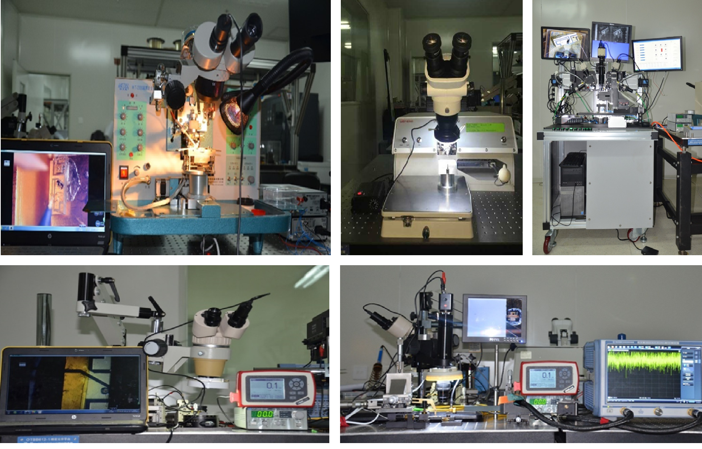

光子集成混沌激光器
研究方向
研究宽带、无时延特征混沌激光产生的新方法，发展混沌非线性系统与控制的基本理论和技术，研制高性能光子集成混沌信号发生器。 本研究方向的具体研究内容包括：
（1）光子集成混沌半导体激光器；
（2）宽带无时延混沌激光产生；
（3）高精度电流源及温控源；
（4）硅基波导结构设计及特性研究。
实验室建设

研究成果
一、宽带混沌激光的产生
利用混沌激光外腔之间的自相位调制、四波混频、交叉相位调制以及互注入拍频耦合等复杂效应激发产生非线性光频，突破半导体激光器弛豫振荡频率限制，产生频谱覆盖范围50 GHz宽带平坦的混沌信号。
半导体激光器互注入产生平坦宽带混沌激光的实验装置和频谱图
Optics Letters, 44(22): 5394, 2019
有源光反馈结合高非线性光纤产生宽带混沌激光的实验装置图和频谱图
Optics Letters, 45(7): 1750, 2020
二、 集成混沌激光源的研制
研制出模块级“光子集成混沌半导体激光器”，目前该集成混沌激光器已实现小批量化生产。
混合集成混沌半导体激光器
三、 样机研制
研制出器件级“50 GHz 宽带混沌激光源”样机，输出混沌激光频谱带宽>50 GHz，平坦度为±2.5 dB。
宽带混沌信号发生器样机 光子集成混沌激光源样机